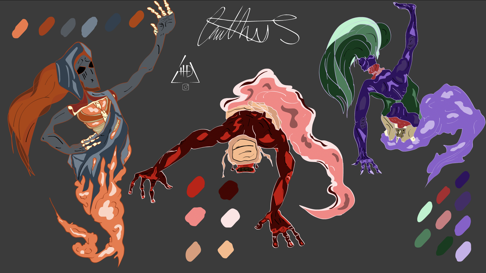
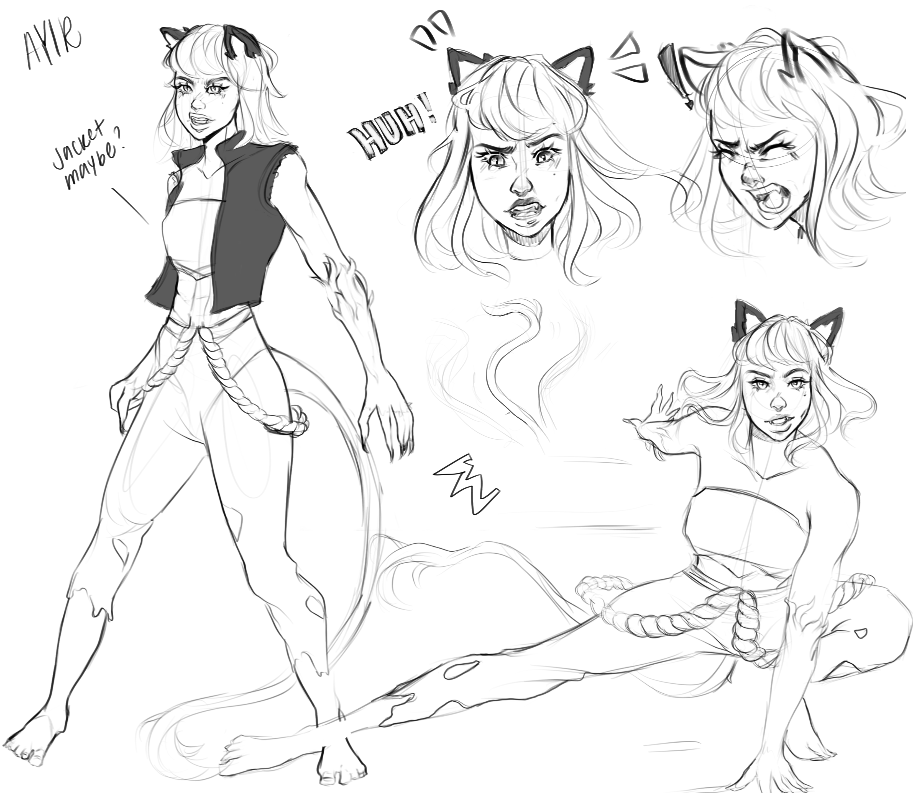

Karma The Six Realm Game
We have built, and continue to build, a database of prosocial game mechanics. Simulating karma (choice/action) and inviting the player to experiment with their present situation.


This links game mechanics to the core values of prosociality/tend & befriend, enabling the players to experience the notion of choice in an interactive and immersive experience.
Based on your Karmic Score (psychological survey and game play), you are born into one of the 6 realms of existence (God, Demi-God, Human, Animal, Ghost, Hell) where you employ our human ability to “tend and befriend” to solve challenges and move on to the next levels.